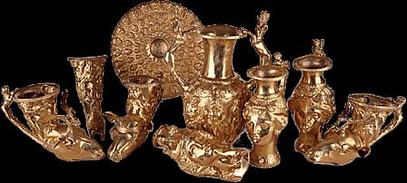

Панагюрското съкровище

Панагюрското съкровище е тракийско златно съкровище, датирано към края на IV-ти, началото III в. пр.Хр. Намерено е през 1949 година на два километра южно от Панагюрище.
Съкровището от Панагюрище представлява изключително красив златен сервиз с много богата украса и орнаментика. Използвал се е или за пиршества или за религиозни тайнства и ритуали свързани с тракийската митология. Състои се от девет съда изработени от чисто злато с общо тегло над 6 кг.
Четири от ритоните са оформени като глави или като предната част от телата на животни – овен, козел, и 2 са с глава на елен лопатар. По горната част на ритоните са художествено изобразени митологични сцени и герои от старогръцката митология. На един от ритоните е изобразен тържествения пир в чест на сватбата на Дионис с критската принцеса Ариадна. Три от съдовете са канички оформени като глава на Амазонка. Дръжките на тези канички са оформени като кентаври-митологични същества с тяло на животно и глава на човек.
Майсторска изработка има и намерената фиала-плитък съд с формата на тава. Върху него са гравирани четири кръга с по 24 изпъкнали орнамента във всеки кръг с намаляващ размер от ръба към центъра на фиалата. Най-външният и двата по-малки от него са оформени като негърски глави, а последният най-вътрешен кръг е от жълъди. Между самите редове и отделните елементи фиалата е украсена с растителни орнаменти.
Най-интересен по форма и украса е големият амфоровиден съд. Дръжките му са оформени като борещи се помежду си кентаври, а двете отверстия за изливане на виното намиращи се в основата на съда като негърски глави. Между негърските глави е изобразена фигурата на детето Херакъл, борещо се със змията. Изключително богатата украса на амфората се допълва от майсторски пресъздадени сцени от митологията.